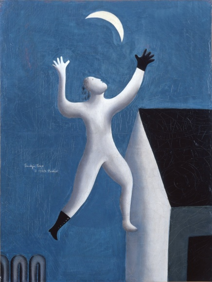
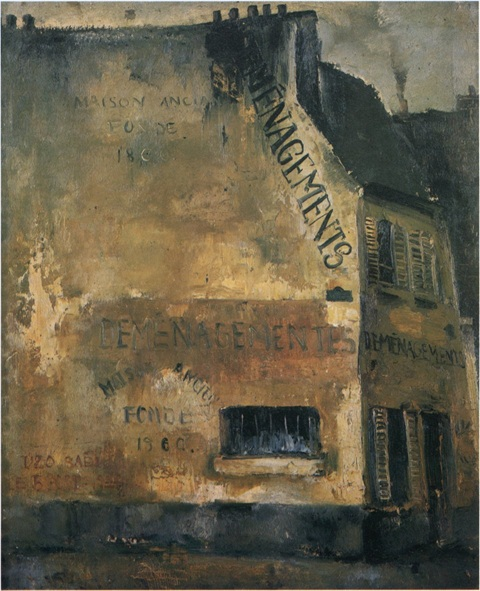
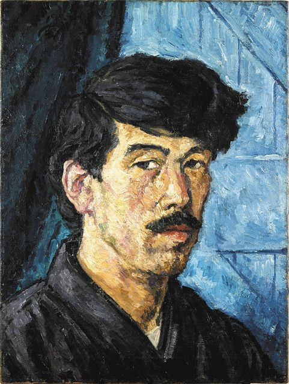

見たものログ 2026
漫画
書籍
映画
- ビーキーパー
映像
ゲーム
- A=B
- 7 days to end with you
- cats organized nearty
- バベル号ガイドブック
- in stars and time
外出
- モダンアートの街・新宿
- 新宿を描いた絵，新宿にまつわる画家の絵
- 思ったより人が少なかった
- 東郷青児
- SOMPO 美術館でメインで推されているらしい
- イケメンだった
- 幻想的な絵が多く，絵本のように感じる
- 竹久夢二を師としている
- 商用的な絵が多いらしく，現役時代はデパートのエレベーターの扉やマッチ箱を描いていたらしい．一方で，女性ファンが多いことを揶揄されていたらしい
- 《超現実派の散歩》
- 当時は「シュルレアリスムの最先端」と呼んだらしい
- 表面をひっかいたような傷が印象的だった
- 謎に髪の毛が生えてて，黒い手袋とブーツを片方ずつ身に着けている
- 性別は不明
- デフォルメされているのに妙に肉感的な気がする
- 背景は家とパイプ

- 佐伯祐三
- 《壁》

- 《壁》
- 松本俊介
- 《立てる像》

- 《立てる像》
- 高村光太郎
- 《自画像》
- 一番良かった
- 表情が絶妙で，無表情のようですが，こちらを咎めているような，諦観を秘めているような，こちらすら見られていないような表情をしています
- 背景は青く，服も黒いため，高村光太郎の顔の白さがよく目立ちます
- 高村光太郎は「顔ほど微妙に其人の内面を語るものはない」と語っているようです
- 当時の高村光太郎が西洋で彫刻の修業を終え，帰国して日本の彫刻界に失望したときの絵のようです
- 前段の発言が前提となって，「日本の彫刻に失望しているオレ…」みたいな表現になっているのかなとか思いました
- だとすると小物すぎる
- いずれにせよ，背景と顔のコントラストによる絵の深度や表情のつかめなさによるぼんやりとした畏怖のようなものを感じて自分は好きでした
- 《自画像》